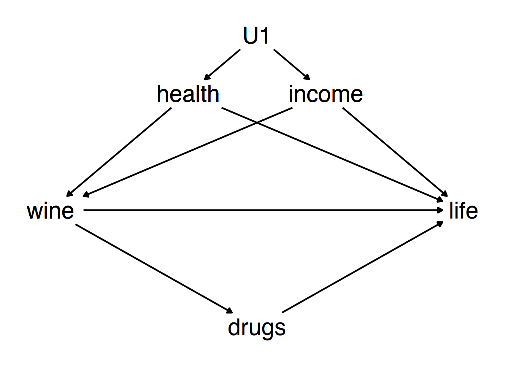

Ip.spend -> profitIP.spend <- tech -> profitIp.spend -> profit is a front door
pathIP.spend <- tech -> profit is a back door
pathIP.spend <- tech -> profit by
adjusting for techtech.
wine to life:wine -> lifewine -> drugs -> lifewine <- health -> lifewine <- income -> lifewine <- health <- U1 -> income -> lifewine <- income <- U1 -> health -> lifewine -> lifewine -> drugs -> lifewine <- health -> lifewine <- income -> lifewine <- health <- U1 -> income -> lifewine <- income <- U1 -> health -> lifewine -> lifewine -> drugs -> lifewine <- health -> lifewine <- income -> lifewine <- health <- U1 -> income -> lifewine <- income <- U1 -> health -> lifewine -> lifewine -> drugs -> lifewine <- health -> lifewine <- income -> lifewine <- health <- U1 -> income -> lifewine <- income <- U1 -> health -> lifewine DOES affect lifeX affects Y. Find all
paths and make a list of what to adjust for to close all back doorsX -> Y,
X -> E -> YX <- A -> Y,
X <- B -> Y,
X <- A <- U1 -> B -> Y,
X <- B <- U1 -> A -> Y,
X <- A <- C -> Y,
X <- B <- U1 -> A <- C -> YA and
B.X and Y while controlling for
W:X is explained by W, and
subtract it out. Call the result the residual part of
X.Y is explained by W, and
subtract it out. Call the result the residual part of
Y.X and
the residual part of Y.df <- tibble(w = rnorm(100)) %>%
mutate(x = 2*w + rnorm(100)) %>%
mutate(y = 1*x + 4*w + rnorm(100))
df <- df %>%
mutate(x.resid = x - predict(lm(x~w)),
y.resid = y - predict(lm(y~w)))
m1 <- lm(y~x, data = df)
m2 <- lm(y.resid ~ x.resid, data = df)
m3 <- lm(y~x+w, data = df)
msummary(list(m1,m2,m3), stars = TRUE, gof_omit = 'Adj|AIC|BIC|F|Lik')| (Intercept) | -0.217 | 0.000 | -0.055 |
| (0.198) | (0.098) | (0.099) | |
| x | 2.679*** | 0.960*** | |
| (0.092) | (0.109) | ||
| x.resid | 0.960*** | ||
| (0.109) | |||
| w | 4.057*** | ||
| (0.234) | |||
| Num.Obs. | 100 | 100 | 100 |
| R2 | 0.896 | 0.442 | 0.975 |
| RMSE | 1.95 | 0.97 | 0.97 |
|
|||
X and Y reflects
both X->Y and X<-W->YX and Y that
W explains to get rid of X<-W and
W->Y, blocking X<-W->Y and leaving
X->YW constant” - we literally remove the variation in
W, leaving it “constant”X and Y within values of
W - this is made clear in the animationwooldridge package)re78)jtrain2)jtrain3)jtrain3
so it gives us the “correct” result from jtrain2library(wooldridge)
#EXPERIMENT
data(jtrain2)
jtrain2 %>% group_by(train) %>% summarize(wage = mean(re78))## # A tibble: 2 × 2
## train wage
## <int> <dbl>
## 1 0 4.55
## 2 1 6.35## # A tibble: 2 × 2
## train wage
## <int> <dbl>
## 1 0 21.6
## 2 1 6.35jtrain3 analysis be
facing?## Variable N Mean Std. Dev. Min Pctl. 25 Pctl. 75 Max
## 1 re75 445 1.4 3.2 0 0 1.2 25
## 2 re78 445 5.3 6.6 0 0 8.1 60## Variable N Mean Std. Dev. Min Pctl. 25 Pctl. 75 Max
## 1 re75 2675 18 14 0 7.6 26 157
## 2 re78 2675 21 16 0 9.2 29 121## # A tibble: 2 × 2
## train wage
## <int> <dbl>
## 1 0 4.55
## 2 1 6.35## # A tibble: 2 × 2
## train wage
## <int> <dbl>
## 1 0 5.62
## 2 1 6.00need.tr, and we never closed
train <- U -> wage, oh and we left out plenty of
other back doors: race, age, etc.) but an improvement| (Intercept) | 21.554*** | 5.653*** | 4.958*** |
| (0.304) | (0.360) | (0.431) | |
| train | -15.205*** | -0.582 | 0.017 |
| (1.155) | (0.841) | (0.865) | |
| re75 | 0.834*** | 0.908*** | |
| (0.015) | (0.029) | ||
| I(re75^2) | -0.001** | ||
| (0.000) | |||
| Num.Obs. | 2675 | 2675 | 2675 |
| R2 | 0.061 | 0.553 | 0.554 |
| RMSE | 15.15 | 10.45 | 10.43 |
|
|||
X <- W -> C <- Z -> Y-> C <-. Those arrow are colliding!C, that path opens
back up!a -> m, b -> m), that doesn’t make them
related. Your parents both caused your genetic makeup, that doesn’t make
their genetics related. Knowing dad’s eye color tells you
nothing about mom’s.x <- a -> m <- b -> y is
pre-blocked, no problem. a and b are
unrelated, so no back door issue!m and now a and b
are related, back door path open.set.seed(14233)
survey <- tibble(prog=rnorm(1000),social=rnorm(1000)) %>%
mutate(hired = (prog + social > .25))
# Truth
m1 <- lm(social~prog, data = survey)
#Controlling by just surveying those hired
m2 <- lm(social~prog, data = survey %>% filter(hired == 1))
#Surveying everyone and controlling with our normal method
m3 <- lm(social ~ prog + hired, data = survey)
msummary(list(m1,m2,m3), stars = TRUE, gof_omit = 'Adj|BIC|AIC|Lik|F')| (Intercept) | -0.047 | 0.932*** | -0.756*** |
| (0.032) | (0.046) | (0.036) | |
| prog | 0.036 | -0.468*** | -0.429*** |
| (0.031) | (0.041) | (0.029) | |
| hiredTRUE | 1.659*** | ||
| (0.061) | |||
| Num.Obs. | 1000 | 432 | 1000 |
| R2 | 0.001 | 0.229 | 0.428 |
| RMSE | 1.01 | 0.73 | 0.77 |
|
|||


gender -> discrim -> wage;
our treatment is gender -> discrim, the discrimination
caused by your gendergender -> discrim -> wagegender -> discrim -> occup -> wagediscrim <- gender -> occup -> wagediscrim <- gender -> occup <- abil -> wagegender -> discrim -> occup <- abil -> wageoccup control? Ignore nondiscriminatory reasons to
choose different occupations by genderoccup? Open both back doors, create a
correlation between abil and discrim where
there wasn’t onegender -> discrim -> occup -> wage: discriminatory
reasons for gender diffs in occupX affects Y. Find all
paths and make a list of what to adjust for to close all back doors
X -> Y,
X -> E -> YX <- A -> Y,
X <- B -> Y,
X <- A <- U1 -> B -> Y,
X <- B <- U1 -> A -> Y,
X <- A <- C -> Y,
X <- B <- U1 -> A <- C -> YX <- B <- U1 -> A <- C -> Y is
pre-closed by a collider)A and
B.